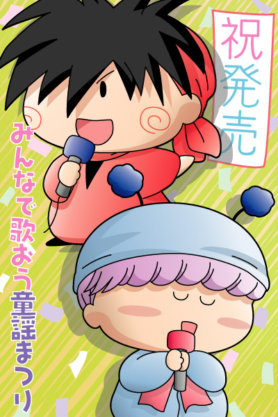

ヤシチ「ムルモと」
ムルモ「ヤシチの出番でしゅ～」
2004年2月に発売されたCD「みんなで歌おう童謡まつり」の中で、ムルモとヤシチがペアとなって童謡メドレーを歌います！そのCDの”発売キャンペーン中～”というような絵を描いてみました。（決して私はレコード会社のまわし者ではありませんので…一応^^;）
お二人には営業用スマイルをしていただいてます。
楽屋に戻ると…
ムルモ「ヤシチしゃん、音程間違えてましゅよ」
ヤシチ「何を～！ムルモも途中歌詞を間違えていたではないか！」
ムルモ「なんでしゅって～！！」
ヤシチ「おぅ、やるかぁ！！」
という感じでとっくみあいのケンカになること間違いなし！？（４６話「ニュース３人娘」での新聞取材のお話でも、最後にはケンカになりましたし…）
お絵描きソフトをIllustratorCSにバージョンアップしたので、新機能の「落書き効果」を使ってみました。背景のランダムな斜線がそれですが、イマイチな使い方だなぁ。。何だか電柱に貼ってあるチラシみたいになってしまいました。(^^;
(2004/3/5)